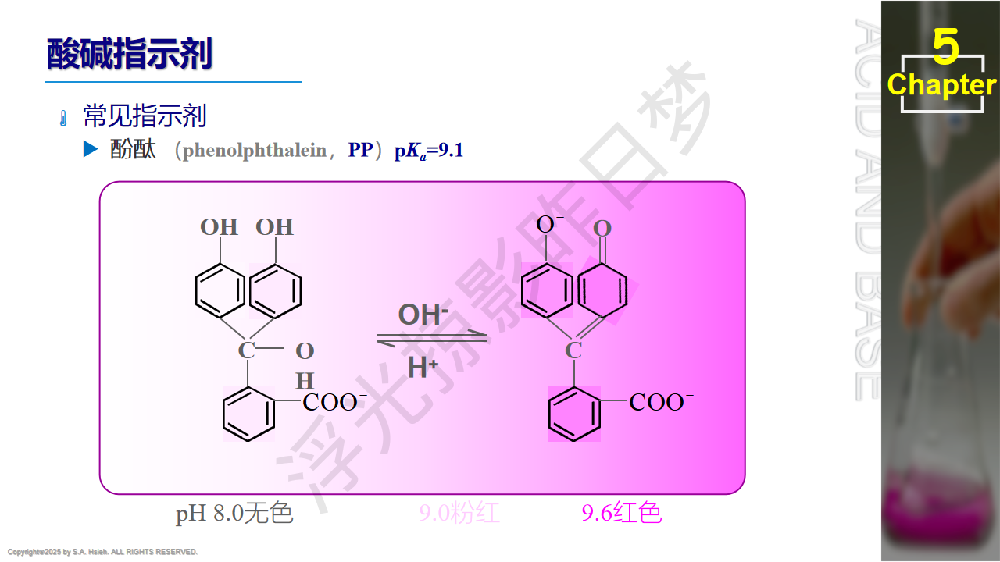
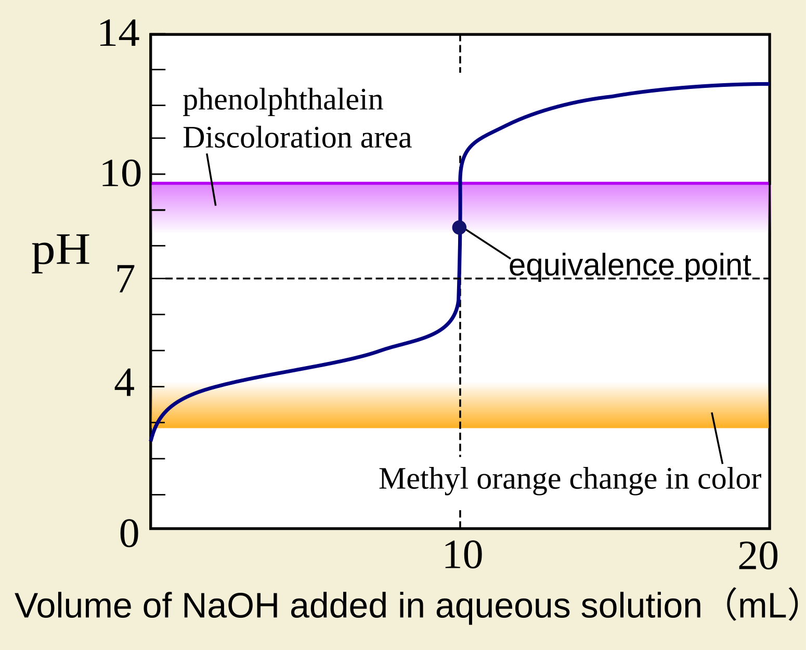
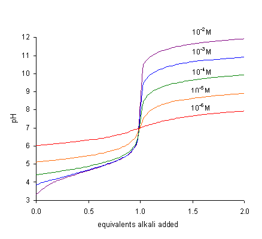
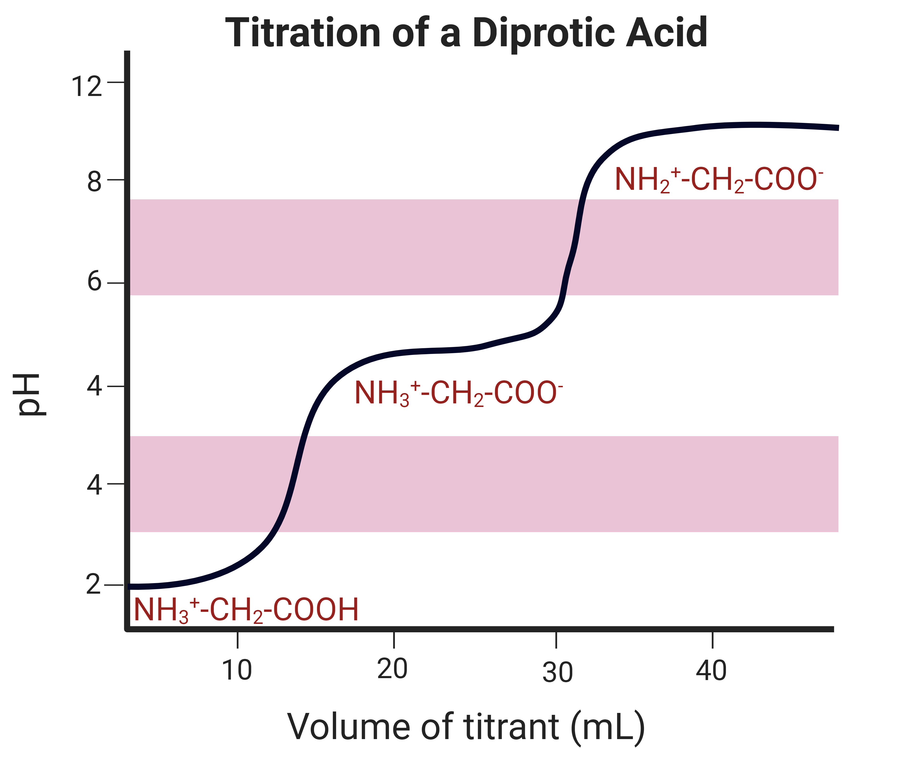

PPT：指示剂 HIn ⇌ H⁺ + In⁻ 平衡原理
PPT: 酸碱指示剂原理
酸碱指示剂本身是有机弱酸或弱碱，其共轭酸碱对具有不同的颜色：
$$\text{HIn} \rightleftharpoons \text{H}^+ + \text{In}^-$$ $$K_{\text{HIn}} = \frac{[\text{H}^+][\text{In}^-]}{[\text{HIn}]}$$当 $[\text{HIn}]/[\text{In}^-] \geq 10$ 时，显酸色；当 $[\text{In}^-]/[\text{HIn}] \geq 10$ 时，显碱色。
即变色范围约为2个pH单位。在 $\text{pH} = pK_{\text{HIn}}$ 时显混合色（变色点/理论变色点）。
已知某指示剂 $K_{\text{HIn}} = 10^{-5}$，则其变色范围为？
解：$pK_{\text{HIn}} = 5$，变色范围 = $pK_{\text{HIn}} \pm 1$ = pH 4 ~ 6。
| 指示剂 | $pK_{\text{HIn}}$ | 变色范围 | 酸色 | 碱色 | 常用场景 |
|---|---|---|---|---|---|
| 甲基橙 (Methyl Orange) | 3.4 | 3.1 ~ 4.4 | 红 | 黄 | 强酸滴弱碱；$\text{Na}_2\text{CO}_3$第二终点 |
| 溴甲酚绿 (Bromocresol Green) | 4.7 | 3.8 ~ 5.4 | 黄 | 蓝 | $\text{H}_3\text{PO}_4$第一终点 |
| 甲基红 (Methyl Red) | 5.0 | 4.4 ~ 6.2 | 红 | 黄 | 强酸滴弱碱；铵盐回滴 |
| 溴百里酚蓝 (Bromothymol Blue) | 7.1 | 6.0 ~ 7.6 | 黄 | 蓝 | 强酸-强碱（最佳） |
| 酚酞 (Phenolphthalein) | 9.1 | 8.0 ~ 9.8 | 无色 | 粉红 | 强碱滴弱酸；$\text{Na}_2\text{CO}_3$第一终点 |
| 百里酚酞 (Thymolphthalein) | 10.0 | 9.4 ~ 10.6 | 无色 | 蓝 | $\text{H}_3\text{PO}_4$第二终点 |

PPT: 酸碱滴定曲线和指示剂的选择

PPT：滴定曲线各段 pH 计算方法（滴定分数 f 法）

PPT: 强酸-强碱滴定曲线

PPT：强酸-强碱滴定完整计算过程

PPT：不同浓度下强酸-强碱滴定突跃对比（c 越大突跃越大）
设用 0.1000 mol/L NaOH 滴定 20.00 mL 0.1000 mol/L HCl：
| 阶段 | 滴定分数 | 溶液组成 | pH 计算 | 典型 pH |
|---|---|---|---|---|
| 滴定前 | 0% | HCl | $\text{pH} = -\lg c_{\text{HCl}} = -\lg 0.1$ | 1.00 |
| 滴定中 | 50% | HCl 过量 | $c_{\text{H}^+} = \frac{0.1\times20-0.1\times10}{30} = 0.0333$ | 1.48 |
| 90% | HCl 少量过量 | $c_{\text{H}^+} = \frac{0.1\times2}{38} = 5.26\times10^{-3}$ | 2.28 | |
| 99% | $c_{\text{H}^+} = \frac{0.1\times0.2}{39.8} = 5.03\times10^{-4}$ | 3.30 | ||
| 99.9% | $c_{\text{H}^+} = \frac{0.1\times0.02}{39.98} = 5.0\times10^{-5}$ | 4.30 | ||
| 化学计量点 | 100% | NaCl | $\text{pH} = 7.00$ | 7.00 |
| 100.1% | NaOH 微过量 | $c_{\text{OH}^-} = \frac{0.1\times0.02}{40.02} = 5.0\times10^{-5}$ | 9.70 | |
| 滴定后 | 101% | NaOH 过量 | $c_{\text{OH}^-} = \frac{0.1\times0.2}{40.2} = 4.98\times10^{-4}$ | 10.70 |
| 200% | NaOH 大量过量 | $c_{\text{OH}^-} = \frac{0.1\times20}{40} = 0.05$ | 12.70 |
在化学计量点前后 $\pm 0.1\%$ 的范围内，pH 发生急剧变化。
| 浓度 | 突跃范围 | 突跃大小 |
|---|---|---|
| 0.1 mol/L 强酸-强碱 | pH 4.30 ~ 9.70 | 5.4 个 pH 单位 |
| 0.01 mol/L 强酸-强碱 | pH 5.30 ~ 8.70 | 3.4 个 pH 单位 |
| 0.001 mol/L 强酸-强碱 | pH 6.30 ~ 7.70 | 1.4 个 pH 单位 |
浓度越低，突跃范围越窄。浓度每降低10倍，突跃两端各缩窄1个 pH 单位。
0.01 mol/L HCl 用 0.01 mol/L NaOH 滴定，突跃范围为 5.3 ~ 8.7（注意是 HCl 被滴定，碱在前酸在后：8.7 ~ 5.3 写法也正确）。
强酸-强碱：浓度增大10倍 $\to$ 突跃范围增大约 2个 pH 单位（两端各扩1个）
弱酸-强碱：浓度增大10倍 $\to$ 突跃范围增大约 1个 pH 单位（仅下限扩1个，上限不变因为上限由 NaOH 过量决定）
这是因为弱酸一侧的突跃下限由 $cK_a$ 共同决定，$c$ 增大10倍只影响一端。
只要指示剂的变色范围全部或部分落在突跃范围内，都可使用。
对于 0.1 mol/L 强酸-强碱滴定（突跃 4.3~9.7）：
对于 0.01 mol/L 强酸-强碱滴定（突跃 5.3~8.7）：

PPT：强碱滴定弱酸四个阶段的计算方法

PPT：不同 pKa 弱酸滴定曲线对比
NaOH 滴定 CH₃COOH 的 pH 曲线

图示：强碱滴定弱酸（HAc）的 pH 曲线。化学计量点 pH > 7（碱性），突跃范围偏碱侧
不同强度弱酸的滴定曲线对比

图示：Ka 越大（酸越强），突跃范围越大、起点 pH 越低；Ka 太小则突跃消失，无法准确滴定
设用 0.1000 mol/L NaOH 滴定 20.00 mL 0.1000 mol/L HAc（$K_a = 1.8\times10^{-5}$，$pK_a = 4.74$）：
溶液中同时存在 HAc 和 NaAc，用 Henderson-Hasselbalch 方程：
$$\text{pH} = pK_a + \lg\frac{c_{\text{NaAc}}}{c_{\text{HAc}}} = pK_a + \lg\frac{n_{\text{NaAc}}}{n_{\text{HAc}}}$$当滴定分数 = 50% 时，$n_{\text{NaAc}} = n_{\text{HAc}}$，$\text{pH} = pK_a = 4.74$（半当量点）
弱酸-强碱滴定的完整数据：
| 滴定分数 | pH 计算 | pH 值 |
|---|---|---|
| 0% | $\sqrt{K_a c} = \sqrt{1.8\times10^{-5}\times0.1}$ | 2.87 |
| 10% | $pK_a + \lg(1/9) = 4.74 - 0.95$ | 3.79 |
| 50% | $pK_a = 4.74$（半当量点） | 4.74 |
| 90% | $pK_a + \lg(9/1) = 4.74 + 0.95$ | 5.69 |
| 99% | $pK_a + \lg(99/1) = 4.74 + 2.00$ | 6.74 |
| 99.9% | $pK_a + \lg(999) = 4.74 + 3.00$ | 7.74 |
| 100% | $\text{pH} = 14 - \frac{1}{2}(pK_b + p c_{\text{sp}})$ | 8.72 |
| 100.1% | $\text{pH} = 14 + \lg c_{\text{NaOH,过量}}$ | 9.70 |
| 200% | $c_{\text{OH}^-} = 0.1\times20/40 = 0.05$ | 12.70 |
溶液中为 0.050 mol/L NaAc（体积加倍，浓度减半）。$\text{Ac}^-$ 水解：
$$K_b = K_w / K_a = 10^{-14} / 1.8\times10^{-5} = 5.56\times10^{-10}$$ $$[\text{OH}^-] = \sqrt{K_b \cdot c_{\text{sp}}} = \sqrt{5.56\times10^{-10} \times 0.050} = 5.27\times10^{-6}$$ $$\text{pOH} = 5.28, \quad \text{pH} = 8.72$$化学计量点 $\text{pH} > 7$，呈碱性！
溶液中有过量 NaOH，共轭碱 $\text{Ac}^-$ 的水解被抑制，pH 主要由过量 NaOH 决定：
$$\text{pH} = 14 + \lg c_{\text{NaOH,过量}}$$0.1 mol/L NaOH 滴定 0.1 mol/L HAc 的 pH 曲线
红色实线：HAc-NaOH；灰色虚线：HCl-NaOH（对比）。橙点为半当量点，红点为化学计量点
0.1 mol/L NaOH 滴定 0.1 mol/L HAc：突跃范围约 pH 7.74 ~ 9.70（比强酸-强碱窄得多）
影响突跃范围的因素：
| 因素 | 影响 |
|---|---|
| $K_a$ 增大 | 突跃范围增大（弱酸越强，越接近强酸-强碱） |
| $K_a$ 减小 | 突跃范围减小（太弱则突跃消失） |
| 浓度增大 | 突跃范围增大 |
| 浓度减小 | 突跃范围减小 |
常见滴定体系的突跃范围汇总：
| 滴定体系 | 浓度 (mol/L) | 突跃范围 | 突跃大小 | 推荐指示剂 |
|---|---|---|---|---|
| HCl-NaOH | 0.1 | 4.30 ~ 9.70 | 5.4 | 甲基橙/甲基红/酚酞 |
| HCl-NaOH | 0.01 | 5.30 ~ 8.70 | 3.4 | 溴百里酚蓝 |
| HAc-NaOH | 0.1 | 7.74 ~ 9.70 | ~2.0 | 酚酞 |
| HAc-NaOH | 0.01 | ~7.2 ~ 8.7 | ~1.5 | 酚酞（勉强） |
| $\text{NH}_3$-HCl | 0.1 | 4.30 ~ 6.24 | ~1.9 | 甲基红 |
| $\text{CH}_3\text{NH}_2$-HCl | 0.1 | ~3.0 ~ 7.7 | ~4.7 | 甲基红/甲基橙 |
用 0.1000 mol/L HCl 滴定 20.00 mL 0.1000 mol/L $\text{CH}_3\text{NH}_2$（$pK_b = 3.38$）。
$\text{CH}_3\text{NH}_2$ 是弱碱，$pK_b = 3.38$，$K_b = 10^{-3.38} = 4.17\times10^{-4}$
其共轭酸 $\text{CH}_3\text{NH}_3^+$：$pK_a = 14 - 3.38 = 10.62$，$K_a = 10^{-10.62} = 2.40\times10^{-11}$
这是强酸滴定弱碱的情形，化学计量点产物为弱酸 $\text{CH}_3\text{NH}_3^+$，pH < 7。
各阶段 pH 计算：
滴定前（0%）：纯弱碱
$$[\text{OH}^-] = \sqrt{K_b \cdot c} = \sqrt{10^{-3.38} \times 0.1} = \sqrt{4.17\times10^{-5}} = 6.46\times10^{-3}$$ $$\text{pOH} = 2.19, \quad \text{pH} = 11.81$$半当量点（50%）：缓冲体系
$\text{CH}_3\text{NH}_2$ 和 $\text{CH}_3\text{NH}_3^+$ 等量共存：
$$\text{pOH} = pK_b = 3.38, \quad \text{pH} = 14 - 3.38 = 10.62$$等价地：$\text{pH} = pK_a = 10.62$（半当量点 pH = 共轭酸的 $pK_a$）
化学计量点（100%）：纯共轭酸 $\text{CH}_3\text{NH}_3^+$
$c_{\text{sp}} = 0.1 \times 20/40 = 0.05\;\text{mol/L}$
$$[\text{H}^+] = \sqrt{K_a \cdot c_{\text{sp}}} = \sqrt{10^{-10.62} \times 0.05}$$ $$= \sqrt{2.40\times10^{-11} \times 0.05} = \sqrt{1.20\times10^{-12}} = 1.095\times10^{-6}$$ $$\text{pH} = -\lg(1.095\times10^{-6}) = 5.96$$化学计量点 pH = 5.96，呈酸性。选甲基红（4.4~6.2）为指示剂。
过量后（200%）：HCl 大量过量
$$c_{\text{H}^+} = \frac{0.1\times20}{40} = 0.05, \quad \text{pH} = 1.30$$其中 $c$ 为弱酸的初始浓度，$K_a$ 为弱酸的解离常数。
若 $cK_a < 10^{-8}$，则突跃范围太小（不到 0.3 个 pH 单位），无法选择合适指示剂，不能直接准确滴定。
同理，弱碱能否被强酸直接滴定：
$$c \cdot K_b \geq 10^{-8}$$
PPT: 多元酸分步滴定的判据

PPT：多元酸分步滴定可行性判据详解

PPT：H₃PO₄ 被 NaOH 滴定的完整曲线（两个突跃）

PPT：H₃PO₄ 各计量点 pH 计算
二元酸滴定曲线示例

图示：二元酸被强碱滴定时的 pH 曲线，可见两个明显突跃对应两个化学计量点（需 Ka1/Ka2 > 10⁵）
当相邻两级 $K_a$ 的比值大于 $10^5$ 时，可以分步滴定，在滴定曲线上出现两个明显突跃。
同时每一步还需满足 $cK_{ai} \geq 10^{-8}$ 的可滴定条件。
考试中若未特别说明，一般取 $10^4$ 为界。
$\text{H}_3\text{PO}_4$：$K_{a1}=7.6\times10^{-3}$，$K_{a2}=6.3\times10^{-8}$，$K_{a3}=4.4\times10^{-13}$
| 步骤 | $K_{ai}/K_{a,i+1}$ | 能否分步滴定？ | $cK_a \geq 10^{-8}$？ |
|---|---|---|---|
| 第一步 $\to \text{H}_2\text{PO}_4^-$ | $K_{a1}/K_{a2} = 1.2\times10^5 > 10^5$ | 可以 | $0.1\times7.6\times10^{-3} \gg 10^{-8}$ ✓ |
| 第二步 $\to \text{HPO}_4^{2-}$ | $K_{a2}/K_{a3} = 1.4\times10^5 > 10^5$ | 可以 | $0.1\times6.3\times10^{-8} = 6.3\times10^{-9} < 10^{-8}$（勉强可用，突跃较小） |
| 第三步 $\to \text{PO}_4^{3-}$ | -- | -- | $0.1\times4.4\times10^{-13} \ll 10^{-8}$ ✗ |
结论：$\text{H}_3\text{PO}_4$ 可以滴定到两个终点：
$\text{H}_2\text{C}_2\text{O}_4$：$K_{a1}=5.9\times10^{-2}$，$K_{a2}=6.4\times10^{-5}$
$$K_{a1}/K_{a2} = 5.9\times10^{-2}/6.4\times10^{-5} \approx 920 \ll 10^4$$结论：$K_{a1}/K_{a2}$ 太小，不能分步滴定。只能一次性滴定到 $\text{Na}_2\text{C}_2\text{O}_4$，即只有一个终点。消耗 NaOH 的物质的量为草酸的2倍。
草酸只有一个突跃（一个终点），因为 $K_{a1}/K_{a2} \approx 920 < 10^4$。
这是高频考点。务必记住：草酸不能分步滴定！
用 HCl 滴定 $\text{Na}_2\text{CO}_3$：
第一终点：$\text{Na}_2\text{CO}_3 \to \text{NaHCO}_3$（pH $\approx$ 8.3，酚酞变色）
第二终点：$\text{NaHCO}_3 \to \text{H}_2\text{CO}_3$（pH $\approx$ 3.9，甲基橙变色）
用 HCl 标准溶液滴定 $\text{Na}_3\text{PO}_4$ + $\text{Na}_2\text{HPO}_4$ 混合物。
分析：
$\text{Na}_3\text{PO}_4$ 是三元碱，$\text{Na}_2\text{HPO}_4$ 是二元碱的第一步产物。用 HCl 滴定：
第一步（酚酞指示剂，滴至 pH $\approx$ 9.7）：
第二步（甲基红指示剂，继续滴至 pH $\approx$ 4.7）：
计算：
$$n(\text{Na}_3\text{PO}_4) = c_{\text{HCl}} \cdot V_1$$ $$n(\text{Na}_2\text{HPO}_4)_{\text{原有}} = c_{\text{HCl}} \cdot V_2 - c_{\text{HCl}} \cdot V_1 = c_{\text{HCl}}(V_2 - V_1)$$
PPT：终点误差的精确定义


PPT：强酸-强碱终点误差推导

PPT：弱酸-强碱终点误差（林邦公式）完整推导

PPT：终点误差图——lg(cKt) vs Et（不同ΔpH的曲线）

PPT：终点误差的应用——计算突跃范围

PPT：终点误差计算要点总结
PPT: 滴定终点误差计算
终点误差（$E_t$，也称滴定误差）：由于滴定终点（指示剂变色点）与化学计量点不一致而引起的误差。
$$E_t = \frac{V_{\text{ep}} - V_{\text{sp}}}{V_{\text{sp}}} \times 100\%$$其中 $V_{\text{ep}}$ 为终点时消耗的滴定剂体积，$V_{\text{sp}}$ 为化学计量点消耗的体积。
其中 $[\text{H}^+]_{\text{ep}}$ 和 $[\text{OH}^-]_{\text{ep}}$ 为终点时的 $\text{H}^+$ 和 $\text{OH}^-$ 浓度，$c_{\text{sp}}$ 为化学计量点时被测物的浓度。
等价写法（利用 $\Delta\text{pH}$）：
$$E_t = \frac{10^{\text{pH}_{\text{ep}}-14} - 10^{-\text{pH}_{\text{ep}}}}{c_{\text{sp}}} \times 100\%$$直接代入终点 $\text{pH}_{\text{ep}}$ 即可，分子 = $[\text{OH}^-]_{\text{ep}} - [\text{H}^+]_{\text{ep}}$。
当终点偏酸（$\text{pH}_{\text{ep}} < 7$）：$E_t < 0$（未滴到/欠滴定）
当终点偏碱（$\text{pH}_{\text{ep}} > 7$）：$E_t > 0$（过量滴定）
其中 $K_t = K_a/K_w = 1/K_b$，$\Delta\text{pH} = \text{pH}_{\text{ep}} - \text{pH}_{\text{sp}}$。
当 $\Delta\text{pH} > 0$（终点偏碱）：$E_t > 0$（过滴定）
当 $\Delta\text{pH} < 0$（终点偏酸）：$E_t < 0$（欠滴定）
对于 HCl 滴定弱碱 B 的情况，林邦公式变为：
$$\boxed{E_t = \frac{10^{-\Delta\text{pH}} - 10^{\Delta\text{pH}}}{\sqrt{K_b/K_w \cdot c_{\text{sp}}}} \times 100\% = \frac{10^{-\Delta\text{pH}} - 10^{\Delta\text{pH}}}{\sqrt{K_t' \cdot c_{\text{sp}}}} \times 100\%}$$其中 $K_t' = K_b/K_w = 1/K_a$（此处 $K_a$ 是共轭酸的），$\Delta\text{pH} = \text{pH}_{\text{ep}} - \text{pH}_{\text{sp}}$。
注意：滴定弱碱时，分子中 $10^{-\Delta\text{pH}}$ 和 $10^{\Delta\text{pH}}$ 的位置与滴定弱酸相反！也可以理解为：分母中使用的是 $K_b$（被滴物的 $K_b$）。
符号约定：
当 $|\Delta\text{pH}| = 0.3$ 时，不同 $\lg(c_{\text{sp}} \cdot K_t)$ 对应的终点误差：
| $\lg(c_{\text{sp}} \cdot K_t)$ | $|E_t|$ | 能否准确滴定？ |
|---|---|---|
| 10.0 | 0.0015% | 极佳 |
| 8.0 | 0.015% | 很好 |
| 6.0 | 0.15% | 勉强可接受 |
| 4.0 | 1.5% | 不可接受 |
规律：$\lg(c_{\text{sp}} \cdot K_t)$ 每减小2，$|E_t|$ 增大约10倍。要使 $|E_t| \leq 0.1\%$，需要 $\lg(c_{\text{sp}} \cdot K_t) \geq 6$，即 $c_{\text{sp}} \cdot K_t \geq 10^6$。
对于弱酸被强碱滴定：$K_t = K_a/K_w$，所以条件等价于 $c_{\text{sp}} \cdot K_a/K_w \geq 10^6$，即 $c \cdot K_a \geq 10^{-8}$。这正是直接滴定判据的来源！
用 0.1 mol/L HCl 滴定 0.1 mol/L $\text{CH}_3\text{NH}_2$（$pK_b=3.38$），以甲基橙为指示剂（终点 pH = 4.0），求 $E_t$。
已知 $\text{pH}_{\text{sp}} = 5.96$（前面已算），$\text{pH}_{\text{ep}} = 4.0$
$\Delta\text{pH} = 4.0 - 5.96 = -1.96$
这是强酸滴弱碱的情形，使用林邦公式（弱碱版本）：
$$E_t = \frac{10^{-\Delta\text{pH}} - 10^{\Delta\text{pH}}}{\sqrt{K_b/K_w \cdot c_{\text{sp}}}} \times 100\%$$其中 $K_b = 10^{-3.38}$，$K_b/K_w = 10^{-3.38}/10^{-14} = 10^{10.62}$
$c_{\text{sp}} = 0.05\;\text{mol/L}$
$\sqrt{K_b/K_w \cdot c_{\text{sp}}} = \sqrt{10^{10.62}\times 0.05} = \sqrt{10^{10.62}\times 5\times10^{-2}}$
$= \sqrt{5\times10^{8.62}} = \sqrt{5\times4.17\times10^{8}} = \sqrt{2.09\times10^{9}} = 4.57\times10^{4}$
分子：$10^{-(-1.96)} - 10^{-1.96} = 10^{1.96} - 10^{-1.96} = 91.2 - 0.0110 = 91.19$
$$E_t = \frac{91.19}{4.57\times10^4} \times 100\% = 0.20\%$$$|E_t| = 0.20\% > 0.1\%$，终点误差偏大。这说明用甲基橙（pH=4.0）做终点不是最佳选择。如果用甲基红（pH=5.0），$\Delta\text{pH} = 5.0 - 5.96 = -0.96$，误差会更小。
用 NaOH 滴定 HCl，分别用甲基红、酚酞、甲基橙作指示剂，$|E_t|$ 从小到大排序？
化学计量点 pH = 7.00（强酸强碱）。
但注意强酸-强碱 $E_t$ 公式中 $E_t \propto ([\text{OH}^-]_{\text{ep}} - [\text{H}^+]_{\text{ep}})$，不对称！
答：$|E_t|$ 大小排序：甲基红 $\approx$ 酚酞 < 甲基橙
即甲基红和酚酞误差接近且较小，甲基橙误差最大。